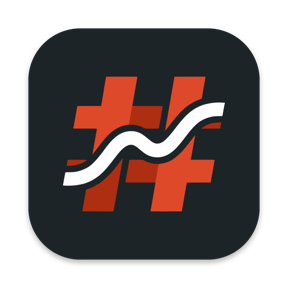

6 ms
jeden úhoz
Medián latence psaní v souboru o velikosti 1 MB, naměřeno 6,0–6,2 ms. Rozpočet je 16 ms, tedy jeden snímek na 60Hz displeji.

Hashline
# markdown editor pro macOS
Hashline otevře obyčejný soubor .md, obarví syntaxi, vedle ukáže hotový text a pak vám nebude stát v cestě. I v megabajtovém souboru zareaguje na úhoz za 6 ms.
Nativní NSTextView a neproporcionální písmo. Mřížky, hvězdičky a pomlčky zůstávají vidět, editor je jen obarví a do textu nesahá.
Stačí se na 60 ms zastavit a náhled dostane jen bloky, které se změnily. Oba panely se posouvají spolu.
Náhled je ve výchozím stavu zapnutý. Jedna zkratka ho schová a editor dostane celou šířku okna.
Rychlost
Každá fáze vývoje končí měřením a novým řádkem v tabulce. Rozpočet je daný předem a co ho překročí, se zapíše jako dluh.
6 ms
Medián latence psaní v souboru o velikosti 1 MB, naměřeno 6,0–6,2 ms. Rozpočet je 16 ms, tedy jeden snímek na 60Hz displeji.
202 ms
Od čtení souboru po okno, do kterého jde psát. Nejhorší ze čtyř běhů a těsně nad rozpočtem 200 ms. Zrychlit první vykreslení okna je na seznamu dluhů.
132 ms
Prohledání 5 000 souborů mimo hlavní vlákno, takže psaní nečeká. Rozpočet je 300 ms.
9,9 MB
Velikost .app včetně matematiky, diagramů a Quick Looku. Strop je 15 MB a žádná závislost se nepřidá bez zdůvodnění.
Release build, MacBook Pro M4 (16 GB), macOS 26.6, 3–4 běhy. Fáze F10, 24. 9. 2026. Latenci psaní měří skript, který píše do 1MB dokumentu přímo v aplikaci, se zapnutým náhledem.
Nativní
55 → 9 ms
Při prvním měření trvalo psaní v megabajtovém souboru 55 ms na úhoz. Profiler ukázal, že 88 % času hlavního vlákna spolkl Touch Bar. AppKit po každém stisku procházel atributy textu kvůli formátovacím tlačítkům, i na Macu, který žádný Touch Bar nemá.
Dvě přepsané metody a medián spadl na 9 ms. Dnes je to 6 ms.
Text píšete do NSTextView na TextKitu 2. WebKit v pravém panelu jen ukazuje výsledek a JavaScript dokumentu v něm nesmí běžet.
Panel náhledu vzniká až ve chvíli, kdy už můžete psát. Když je skrytý, WebKit se vůbec nespustí.
Nad 100 000 znaků se dokument parsuje na pozadí. Psát jde hned, barvy doběhnou za chvíli.
Automatické ukládání, historie verzí, Otevřít nedávné. Quick Look ukáže .md přímo ve Finderu, Služby převedou výběr z jiné aplikace na nový dokument.
Paper, Solarized Light, Tomorrow Night a Solarized Dark, zvlášť pro světlý a tmavý režim. Vlastní téma je složka s theme.json a theme.css.
DMG 6,94 MB · macOS 14+ · Apple Silicon
Soubory
Žádná databáze, žádná knihovna, žádný vlastní formát. Hashline otevře soubor .md, který leží na disku, a uloží ho zpátky přesně takový, jaký byl. Otevřít, upravit, uložit, porovnat: rozdíl nula bajtů. Zítra ho otevřete ve Vimu, na GitHubu, nebo za dvacet let v něčem, co ještě neexistuje.
Minimalismus
Co v seznamu chybí, nechává Hashline systému. Soubory synchronizuje iCloud Drive nebo cokoli, co už používáte. Nápady, které se nevešly, čekají v docs/ideas.md.
Bez účtu, bez telemetrie. DMG 6,94 MB
Co umí
Otevřít 1 MB, upravit, uložit. Porovnání s originálem je prázdné.
Zvýraznění Markdownu i kódu v 36 jazycích, klikací úkoly, ⌘-klik na odkaz, synchronní scroll.
Formátovací lišta, ⌘B, ⌘I, ⌘K, pokračování seznamů. HTML ze schránky se vloží jako Markdown.
Tabulky s přeskakováním Tabem, poznámky pod čarou, [toc], emoji, matematika, diagramy Mermaid.
Přetáhnete obrázek do textu a kopie skončí v ./assets/. Načítají se jen viditelné.
Čtení ⌘/ i tlačítkem v liště, soustředění, psací stroj, stavový řádek. Přepnutí u 1 MB do 33 ms.
Postranní panel, osnova, hledání v knihovně ⇧⌘F, rychlé otevření ⌘P, najít a nahradit s regexem. Mazání do koše ⌘⌫.
HTML, PDF se záložkami, PNG, kopie v Markdownu. Přes Pandoc DOCX, ODT, ePub, LaTeX a další, i import.
Čtyři vestavěná, vlastní téma bez restartu, písmo, výška řádku a šířka textu.
Čeština a angličtina, Quick Look ve Finderu, Služby, Sdílet, přístupnost.
Sandbox a sanitizace HTML. Ze 77 útočných vzorků se nespustí ani jeden. Žádná telemetrie.
DMG, aktualizace přes Sparkle podepsané klíčem EdDSA, návod k instalaci.
Aplikace je podepsaná bez účtu Apple Developer. macOS ji proto napoprvé zablokuje: stačí jeden příkaz v Terminálu, nebo povolení v Nastavení systému ▸ Soukromí a zabezpečení ▸ Přesto otevřít (návod). Aktualizace si pak po vašem souhlasu jednou týdně zkontroluje sama.